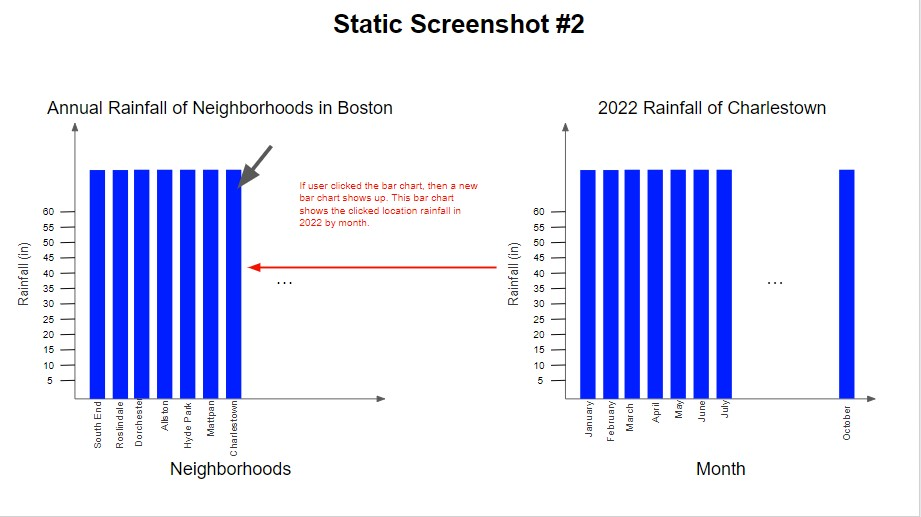

Boston Sewer Network Map in 1993
This project pertains to the sewer systems within the city of Boston and more specifically in neighborhoods along the Massachusetts Avenue area. Sewer systems are a vital aspect of cities and towns that allow communities to stay healthy and safe throughout their day-to-day lives. Our project began with the question of how to keep this important sewer system safe for a long time and prevent dangerous situations in advance. As a proactive measure, the goal of an interactive data visualization will be developed, in order to keep public health in its best shape for as long as possible.
In order to keep the focus on proactive measures towards community health and safety, both public and private sewer systems in Boston need to be accounted for. Additionally, past blockage and weather data will be utilized in order to better prepare for a future mishap or trend. The visualization’s intent is to effectively assist community organizations in bolstering their current sewer systems and finding the areas that need the most help.
Data that we used for this group project is “Lead Service,” “Sanitary Sewer Overflow,” and “Rainfall” data. In Lead Service data, there are Lead Service Address, x and y in the raw csv file. Lead Service Address is a categorical data type and represents the address of the lead service location. X and Y are the coordinates of the location in the map, but we could not use these coordinates. Instead of X and Y, we added Latitude and Longitude of each location. We got this data from Google Maps (using geocode in google sheet). Latitude and Longitude are quantitative data types that represent the coordinates of the location.
In Sanitary Sewer Overflow (SSO), there are SSO locations, neighborhood, spill type, start date, start time, end date, end time, spill volume, cause, corrective action, x and y in the raw csv file. SSO location is a categorical data type and represents the address of the locations which have had overflow accidents during last year. Neighborhood is a categorical data type and represents the neighborhoods of Boston where the SSO occurs. Spill type is a categorical type and represents the overflow spill types such as public and private. Start date, start time, end date, and end time are ordinal data types representing the given SSO’s start and end period. Spill volume is a quantitative data type representing the measurement of spill volume. Cause is a categorical data type representing the cause of the overflow. Corrective action is a categorical data type representing how to deal with the overflow problems. X and Y are the coordinates of the location in the map but we could not use this coordinate. Instead of X and Y, we added Latitude and Longitude of each location. We got this data from Google Map (using geocode in google sheet). Latitude and Longitude are quantitative data types that represent the coordinates of the location. In BWSC Rainfall Yearly, there are sites and inches. Sites is a categorical data type representing the neighborhoods in Boston. Inches is a quantitative data type representing the rainfall of the specific neighbor of Boston in 2022.
Our group got two ideas through an interview with Service-Learning Partner Caroll. Caroll agreed with our idea of predicting future accident areas by analyzing the overflows in the past year. She recommended an idea of analyzing the rainfalls of the Boston neighborhoods and predicting an area where accidents are likely to occur. She also recommended designing a map representing the connection of the public sewer system and private sewer system to help provide an overview of the overall sewer system in Boston; However, we could not make this map because we could not find the data related to public and private sewer system coordinates.
The top priority task is to examine overflows in Boston. Overflow is an accident that is directly related to the problem of the sewer system. By observing and analyzing an overflow area over the past year, we can identify the accident-prone areas and advocate for the necessity of checking the sewer system in the specific accident-prone areas. The second task is to analyze the rainfall in Boston. It is a fact that rain causes overflow in the sewer system. By investigating rainfall of the Boston neighborhoods, it is possible to predict areas where overflow accidents can occur in the future and prevent accidents by examining the sewage system in that area in advance. The third task is to provide an overview of the sewer system in Boston in order to understand the details of the sewer network’s connections.
Unlike other accidents, overflows are connected to an important sewage system and usually solve cases within a day. When we look at the data over the past year, all but one out of 66 cases were solved within a day. One case also occurred around 9:40 pm and was solved the next day. When looking at the cases classified as neighbors, the Central and Roxbury neighborhoods had the frequent overflows with 10 cases, followed by South Boston with 9 cases. Usually, overflows are associated with rainfall, but Boston overflows last year were not associated with the rainfall areas according to our analysis. As a result, we could see that other factors are more related than rainfall when overflows occur in the sewage system. We thought that lead services were distributed evenly in Boston to install sewage systems in all areas; however, the lead services were distributed depending on the population density in Boston.
The purpose of data visualization 1 is to analyze the overflow by the timeline. Users can control the timeline and the map and Gantt chart shows the data at the specific timeline. We chose the timeline chart as a line chart to emphasize the trend of data. Timeline has an x-axis and a y-axis. X-axis represents the start date of overflow and y-axis represents the spill volume. The vertical bar represents the specific time along the period in the x-axis. To represent the location of overflow, we chose a map visualization. To explain the period of the case, a start date, a start time, an end date, and an end time, we chose a gantt chart. In the gantt chart, the length of the bar represents the period of the case. X-axis represents start time and end time. The Y-axis represents the start date of the overflow.
The purpose of data visualization 2 is to analyze the rainfall of the neighborhoods in Boston. The left bar chart represents the rainfall of each neighborhood in Boston. We chose a bar chart because the data has a categorical data type (neighborhood) and a quantitative data type (rainfall inches). The right line chart represents the rainfall of the allston in each month in 2022. We used a line chart because our data has an ordinal data type (month) and a quantitative data type (rainfall inches). These bar charts and line charts are the most intuitive and easy to understand by the viewer. If users hover the mouse over specific neighborhoods in the left bar chart, the right line chart interacts to present the specific neighborhood’s rainfall for each month. By analyzing the trend of line charts, we can analyze the relationship between the rainfall and overflow in Boston.
First Visualization
These are a combination of a scatter plot, a map and a gantt chart analyzing Sanitary Sewer Overflow (SSO). The map represents the location of the SSO, the gantt chart represents the period of the SSO and the scatter chart represents the spill volume of the SSO by the timeline. Users can manipulate the vertical bar on the scatter plot and this bar is interacting with the map and the gantt chart.
Second Visualization
The left bar chart represents the annual rainfall of Boston neighborhoods in 2022. The right line chart represents the monthly rainfall of each neighborhood in 2022. Users can click the bar chart or the legend of the line chart.